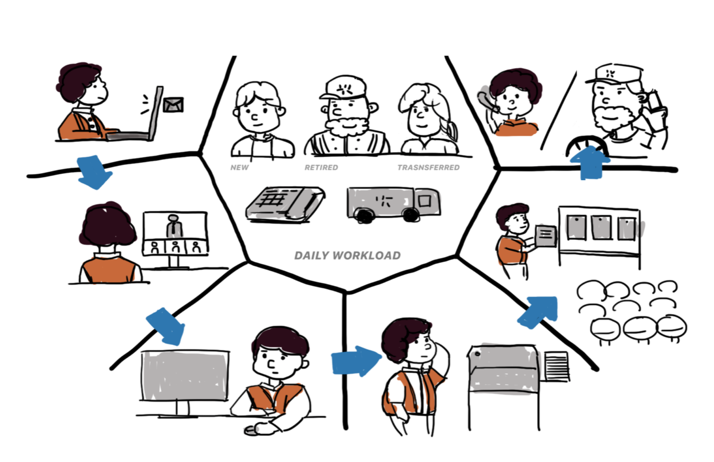
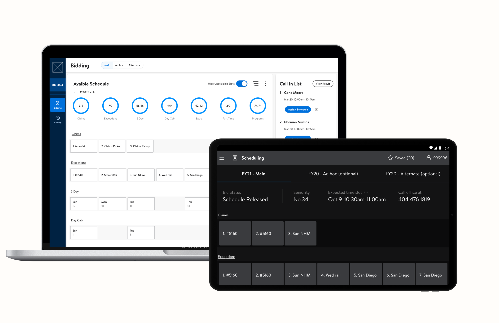
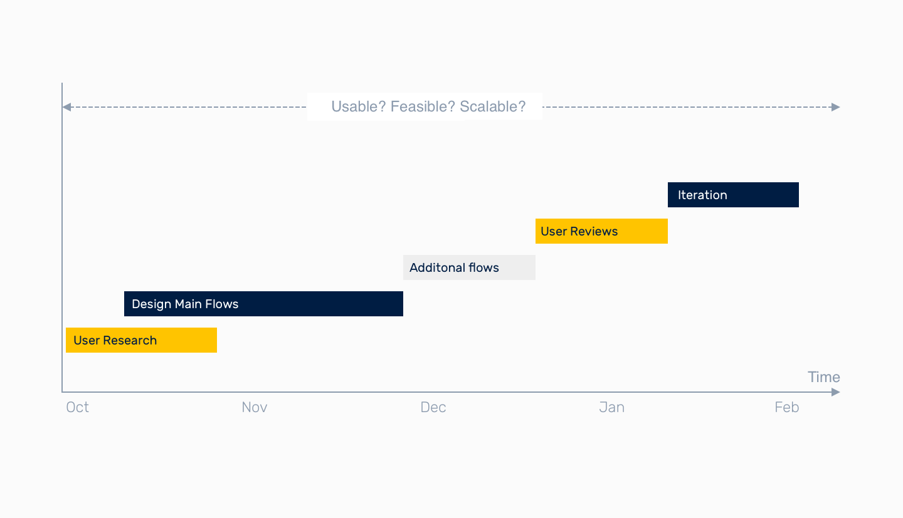
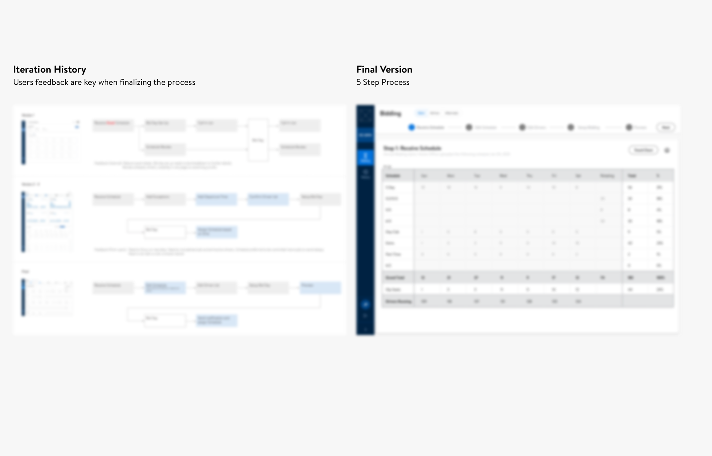
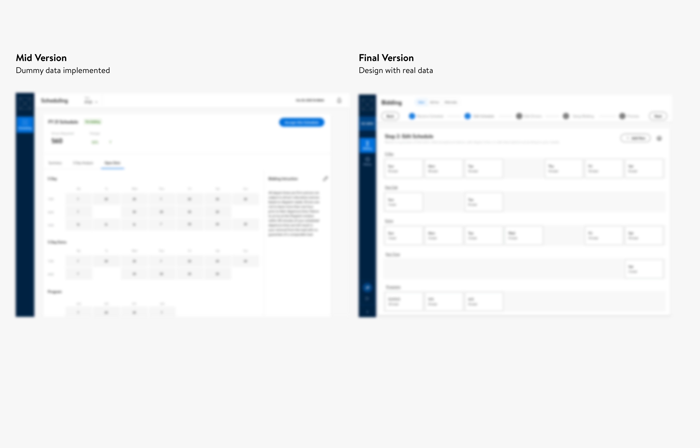
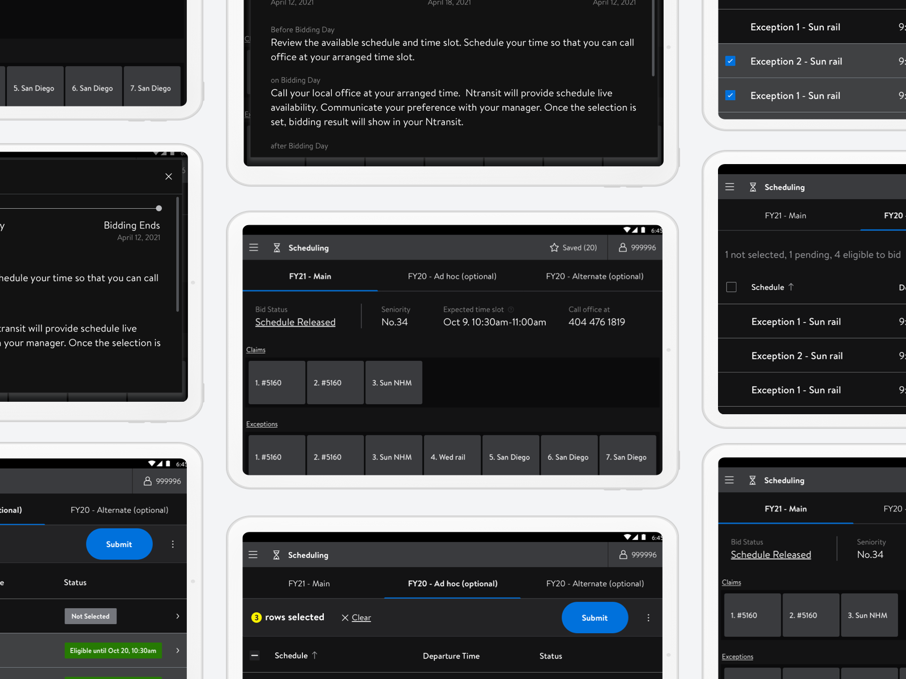
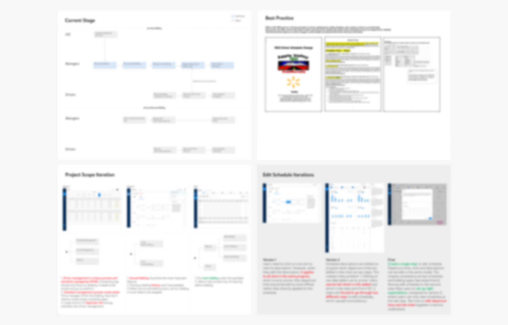

Scheduling
Background
Just like how school advisors need to faciliate class registration for college students, Walmart Transportation managers need to faciliate schedule bidding process for truck drivers. These schedules defines the weekdays and weekends for truck drivers and have a huge impact on drivers' work life balance. Business also requires managers to let drivers working at walmart for the longest time select the schedules first. This project aims at researching bidding process, designing a scaleable soltuion and testing it with transportation managers to improve their efficiency. With the new solution, we aim at saving 24k labour hours per year for non-value added activities at Walmart warehouses.

Outcome
The final concept was accepted by end users, 5 out of 5 participates expressed strong willingness to adopt the system. The result won approval from leadership role and is planning to launch. My manager commented that: "Overall you're doing awesome on this work! Just pushing it as much as we can 🙂."
My role
In this project, I conducted user research in 5 Reginal Distribution Centers, created mockups for proposed solutions and tested the concepts with another 5 Regional Distribution Centers. I helped to identify potential users, defined the features in details and pushed for design modifications. I advocated designing for all three types of biddings, which helps the whole team gain a holistic view. In order to get end users buy in, I also created a dark theme tablet UI so that managers understand how the system works.
Restricted by Non-disclosure Agreement, I am not able to display critical business info in this portfolio, but I put a password to protected content on the right upper corner of my resume 👀. Also feel free to book a coffee chat with me!
Learnings
Leading users through a standard but flexible process
The project was hard as it is a platform to replace at least 5 different excel files. Managers have their preferred way to organize data in these file. To make things even more complex, there are no clear distinction about when and how they will use those excel files. Designing a standard process for all managers was a great design challenge, let alone the two new types of bidding we found out.
I created wireframe based on how most managers describe it: before bidding, bid day and after bidding. However, this was not enough. There were so many different ways to chunk the data. And none of the users have prediction to what steps will be presented to them. Through several rounds of iteration, I discovered there were two ways to solve this problem. First of all, presenting a wizard UI can help all the managers have predictions. Managers can understand which step they are at and what is the next step. Secondly, we chunked the info by three subjects: what to bid, who will bid and when to bid. These three subjects are discovered to the the top 3 questions managers need to tackle. This version also proved to be way more efficient than the previous versions.
Design with real data
I used the real schedule data from an office when designing mid fidelity prototype. This revealed edge cases undercovered by dummy data: Not all offices have every type of program, and the previous dashbaord design failed to display unavailable programs. I spend a week redesigning the dashboard. With the new design, managers will be able to understand if an empty slot means not available or fully booked.
Design for all touchpoints
Drivers are having limited access to live bidding progress right now. They know the results by the excel files posted on their office wall. As this project will eliminate the excel usage, I also need to design the manager-driver communication. 5 out of 5 managers had questions about this communciation and cared about how to notify drivers.
As a result, I created a tablet UI for drivers using dark theme UI. We presented both tablet UI and desktop UI to managers to show how the system works. This cleared many questions and help to gain user buy-in. Although there are still a lot to test, designing for all touchpoints helped to visualize the experience for all stakeholders.
Document and transfer work
We transferred this work to another design team due to org change. I created a process book to document all the design decisions we made. This explained the marketing standing, the difference in operations, what we have decided to do and not to do. I send out the process book to the designer which helped them onboarding with this project quickly.
And...
I want to thank my design manager for his support and leadership. I have been learning a lot under his supervision. In this project, I learned to ba patient, do the right thing and move fast.